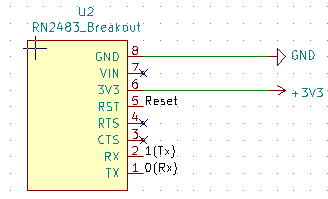
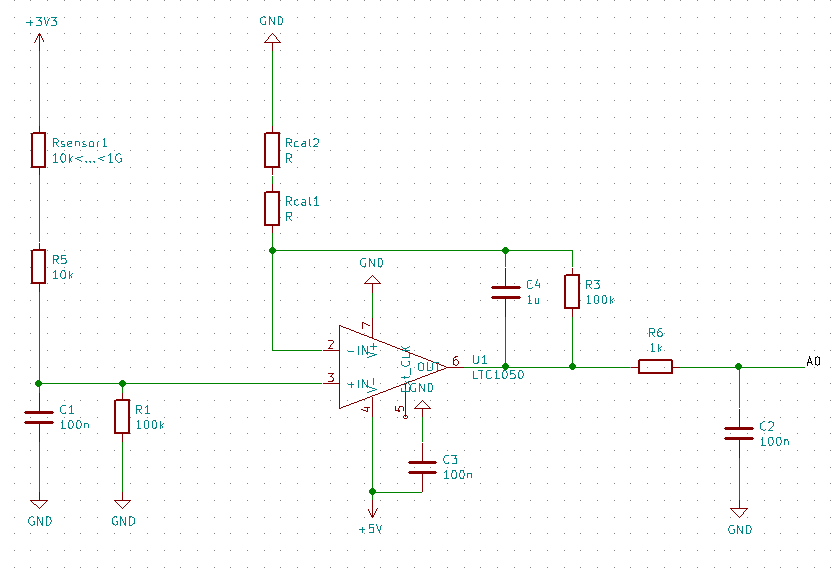
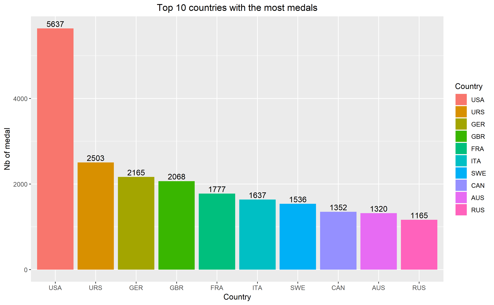
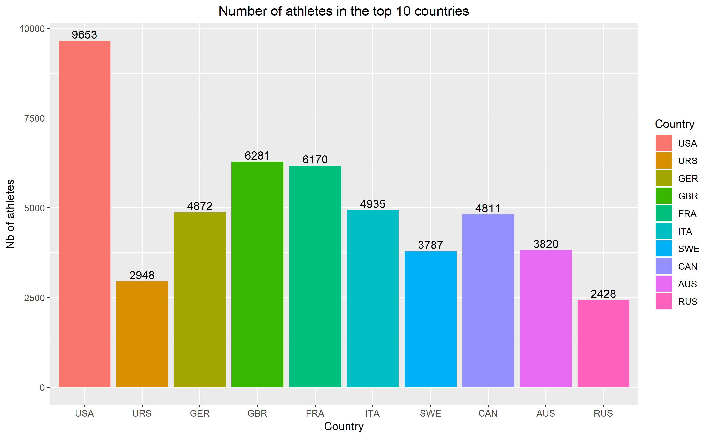
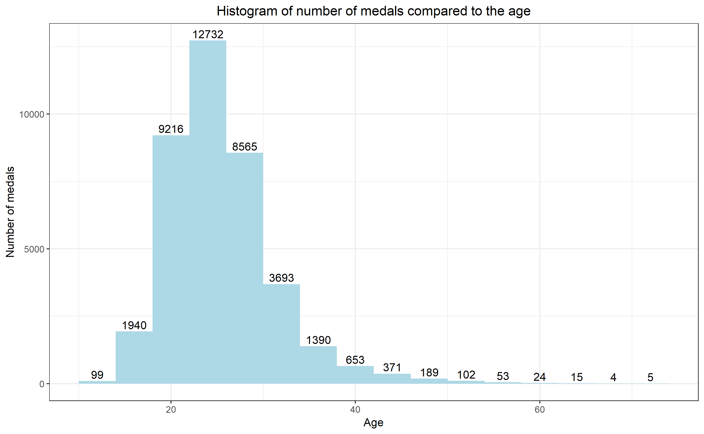
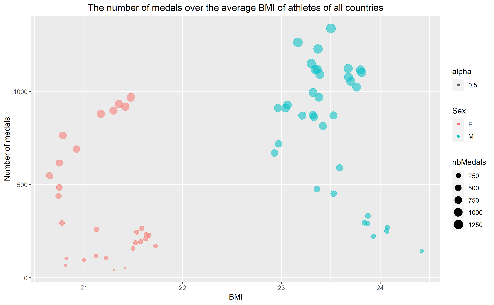

B.II. Smart Devices
B.II.1. The environment and context
During this last year of studies, I have followed a course called microcontroller and open-source hardware. It was the first time for me to learn about Arduino. From this course I have learned about open source, Arduino and using of KiCad.
At the end of this course, we have to create our Arduino Uno extension board, by designing the PCB and routing the circuit. The purpose of the board is to adapt the impedance of a gas sensor in order to connect it to the Arduino Uno. Then the Arduino Uno has to send the data of the gas sensor to a LoRa module and the LoRa module will send this data to The Things Network.
B.II.2. Your function
We worked in pairs and my partner and I worked on the same things. Firstly, we have created the LTC1050 symbol and the RN_Breakout2483 symbol. Secondly, we have designed the circuit diagram. We used a resistor for the gas sensor, the LTC1050 for the adaptation of the impedance and the RN_Breakout2483 for the LoRa module. Lastly, we have drawn the routing in red and green.
 
B.III. Innovative Project
B.III.1. The environment and context
Nowadays, big cities have various nuisance which impacts on the health and the comfort of citizen. The University of Wollongong in Australia has proposed a project on designing an embedded sensor platform to be deployed by non-scientific people. This platform has to collect data about the quality of the air in a city by using mobile or fixed sensors, analyze these data and display them by a user interface as a website.
This project is the main project for the Innovative Smart System training as it combines electronic and computer science skills. For this project, our team is composed of five students: two from electronic domain and three from the computer science domain. We divided the project into two parts: an electronic part and a software part.
B.III.2. Your function
Because I am a computer science student, I worked in the computer science team. Our mission was to develop a web user interface and to analyze data measured by the air quality sensor in order to interpret them and show them on the interface through graphs and maps. We have decided to use the Framework Angular to develop our website because it is supported by Google and what’s more, one of the team members has already used it. I mainly worked in developing websites using Angular.
B.IV. Hackathon
B.IV.1. The environment and context
We have been to Banyuls sur mer during the beginning of November. We have chosen an idea which is relevant to the aquarium and we have worked on it during two days in a group of five. Actually, I was the only one study computer science and the others all major in electronic.
This project mainly used the knowledge of electronics, such as Arduino, sensor, etc. Our project was to do a new aquarium for children to throw the garbage into the dustbin. Every time a child throws a garbage into the dustbin, the image in the aquarium, which is shown by a big screen, will be more and more clean. That tells children do not throw the garbage anywhere in the earth and just throw it in the dustbin. So we can make children protect environment.
We putted an ultrasonic sensor in the dustbin so that we can use this sensor to detect if there is a garbage coming. Every time the sensor detects something, we can change the image in the screen. Finally, the image becomes more and more beautiful and clean.
We would want to do a garbage classification for children to throw the different kind of garbage to the different dustbin. But we did not have enough time to do that and we did not have all kinds of sensors.
B.IV.2. Your function
During two days of Hackathon, we worked with a group of five. Firstly, we have done the brainstorming to choose a new and creative idea for our project. After choosing the idea, we have begun coding for the project. Because all other four students come from electronics, they were more familiar than me to program the Arduino board. I have done something with the image, such as choosing an original image, adding some dirty garbage in the image and deleting the garbage step by step to make the image more and more clean. What’s more, I have helped them when they needed some helps. And I have done the most part of the PowerPoint for the second day’s presentation. Finally, our group has won the third prize.
B.V. Big Data
B.V.1. The environment and context
I have learned a course called big data last year. It was the first time that I had learned the language R in order to analyze the data and draw graphs to show the data analysis. At the end of the course, we need to choose a data set, define the problem that we want to analyze about the data set and draw four graphs to show the data analysis. Many websites provide free data set. And we have chosen one data set from the website kaggle about the history of the Olympic Games since Athens 1896. We want to know which parameters impact on the winning a medal at the Olympic Games.
B.V.2. Your function
We have done this project in pairs and my partner and I have done the same things. We want to analyze which parameters impact on the winning of a medal at the Olympic Games. From the first and second graphs, we can see that the USA has the most medals and the most athletes. But the number of medals doesn’t have the positive ratio with the number of athletes. So only with the number of athletes, we can’t determine the number of medals. Then we analyzed if the age range has an impact on the winning of a medal. From the third graph, we can know that the most of the medals are gathered between 18 to 30 years old. Lastly, we can observe from the fourth graph that the BMI of women is between 20 and 22 and the BMI of men is between 23 and 25 approximately.
We can deduce that the number of athletes, the age and the BMI have an impact on the winning of a medal.
   